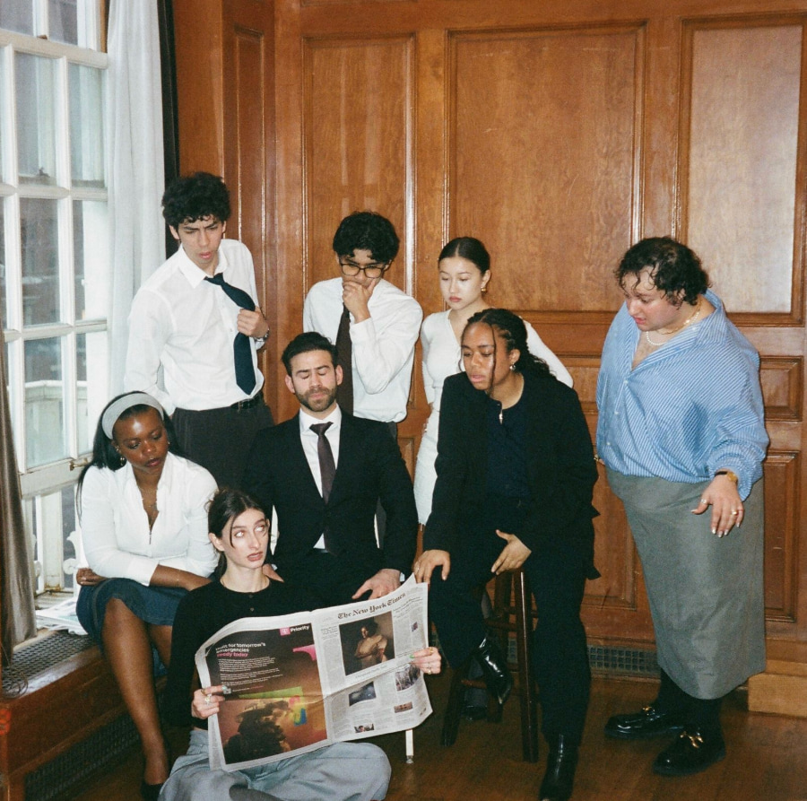
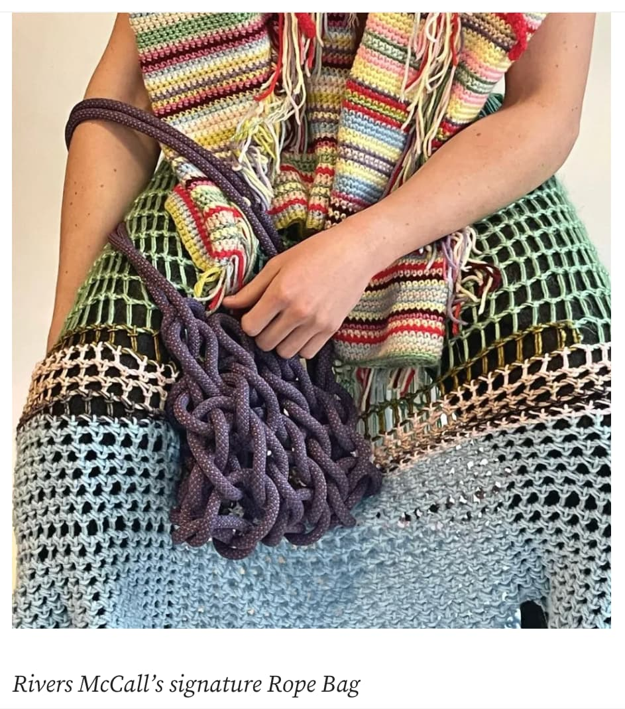

There was one period of time when I felt my writing voice develop particularly rapidly.


It was maybe a year or two into school. I was a journalism major and also inspiration was all around.
I started tuning more into the frequencies that the city was sending me and was curious as to why I felt compelled to write about some more than others.
At the same time, I worked as a writing tutor at my university's writing center, where a lot of our work consisted of studying the act of writing itself, and it's relationship to thinking, language, memory, feeling.
Things started clicking when writing became the way to connect these two, both my inner and my outer life.
That liminal space between what I saw and what I felt, was rich with questions and contradictions.
Working within and against these tensions enlivened my writing with more force, and a kind of rare energy that would allow it to evolve on its own, irrespective of me.
Writing was always spiritual, and I hope that you reader are able to sense a bit of mine through the work on these pages.